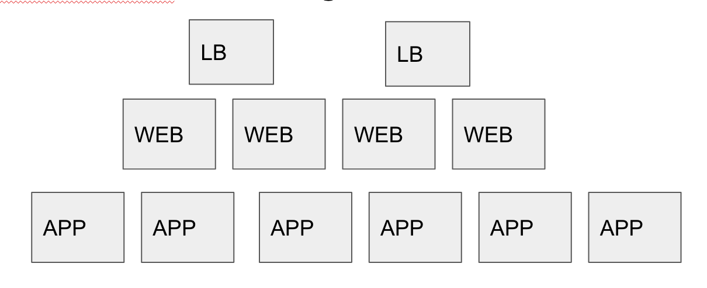
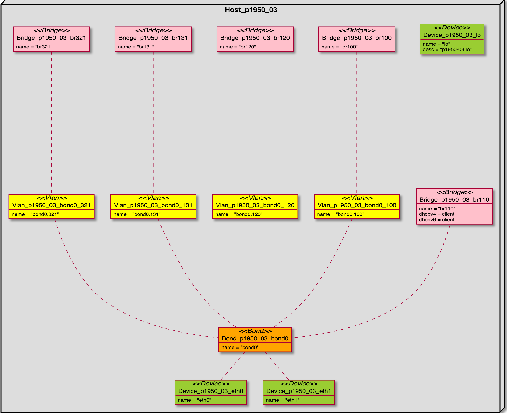

container-ship
driven by @fastandfearless
today
- feedback thx! today get a better start -:)
- hardware
- netzwerke
- application-architectur
admin + devops = developers
what is cluster
some bare-metal computer 2 or more
some containers more the one typical more than 10
why we want/need a cluster?
less powerconsumtion/higher utilisation
better performance
better uptime
mixing different workloads
never get everything
Consistency (all nodes see the same data at the same time)
Availability (a guarantee that every request receives a response about whether it succeeded or failed)
Partition tolerance (the system continues to operate despite arbitrary partitioning due to network failures)
CAP Therorem!
add a container
Requires high availability typical failure time less than 10sec
single container hardware/software failure proof...fail
do container one active one passive...good...scale? (loadbalancer/router)
adding container which are syncronized...good..scale/performance? (ACID Database Clusters)
adding containers which shards/hashes/partion/stateless(cdn)...good?
what if you put more than one container on the same host?
abstract application components
- deployment (chef/puppet/ansible)
- router
- dns
- application ip-nr(port)/loadbalancer/webserver
- app-servers
- backend database
- backend dataprocessing(bigdata)
deployment tools
- availability
- consitenty
- scalebility
- features
- switch deployment
- rotational deployment
- offline deploy
monitoring
- availability
- consitenty
- scalebility
- automatic reconfiguration
router
- availability
- consitenty
- scalebility
- master-slave (default gw) (vrrp-keepalived)
- master-master(ospf-bgp) (-loadbalancing)
- dhcp-shared-state
dns
- availability
- consitenty
- scalebility rr-ip and failovers
- atleast three different ip# in a own segment
webserver
- DNS-Roundrobin/Geoip
- L2
- L3 to L7

app-server
- nginx + Phusion Passenger + unicorn
- tomcat/JETTY/WEBSPHERE....
- NGINX/APACHE + PHP
- APP-StaTE/STICKY-Session/SESSION-Sharing
- CRASH-DETECtioN-RETRY-RESTART
database-persitence
- master-standby
- master-slave-slave
- master-master-master
- (master-partion-1)-(master-partion-2)-master-partion(3)
- ring-ring-ring (mandelbrot-layers) recursive
- storage == host + transactionlog ACID
- no permenant storage(rolling deployment one by one)
- resync times/startup times
event or batch dataprocessing(bigdata)
- runtimes forever or longer than 10 hours
- dynamic scaling depending on workload
- don't miss one event
- don't miss your temporary results if the aggreation for one day need 22h you can repeat it
so much different requirements in one cluster
- solution I: one cluster per application style
- solution II: one cluster for all
the process of assiging/deploy an application to a cluster is
named orchestration!
universal host
- storage/disc redunant reboot/crash safe
- network external and internal networks
universal host storage
- all host are equal but what is in 1 year?
- use raid 1,6,10,... database server are different?
- if you use raid use software raids, to move
discs between different hardware
- every container should have its own filesystem lvm
- faster deployment with btrfs or zfs (snapshots-raw copy)
universal host network
- for every network we need one cable,...
this is not buildable 20 cables in one box
- vlan's to the rescue, one cable, virtual cable on it, needs support from the switches, does not scale to more than 4095, but there is something else vxlan out, but this has a build in security problem.
- deployment of the switches but how?
- every host has to legs one the left one to the right, they are bonded/lacp(active-backup) mode
- every leg is connected to a different switch called TOR(Top of rack)
- there is one network which has a not performance requirement, but very high requirement of security and availability needs a own cable (ipmi)(3 switch per rack)
universal host network services
- routing(access/deployment)
- dhcp(deployment)
- tftp(deployment)
- backing store ubuntu mirror(don't hit offical mirrors with a deployment of huge numbers of cluster members
universal host internal network

wrapup
- orchestration is hard!
- storage is pretty complex
- network is pretty complex
- it gets easy on scale >20 http://www.supermicro.nl/products/system/3u/5038/sys-5038ma-h24trf.cfm but be carefull (do systems per blade/two switches per blades... no bonding)
the end...questions?...thx
powered by http://github.com/mabels/construqt / @construqt
slides: http://github.com/mabels/talks/beyond_the_network